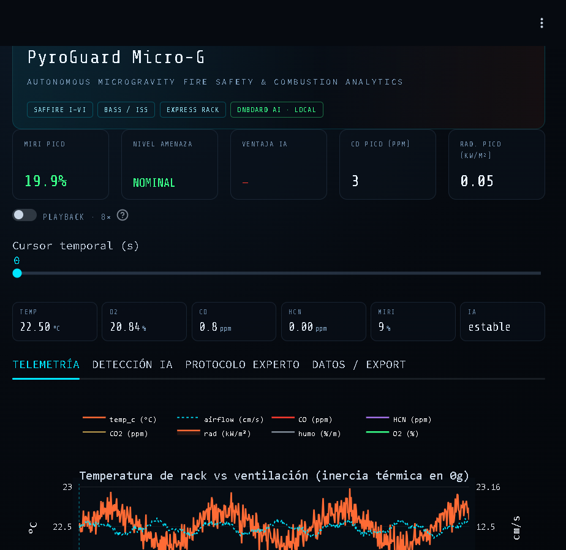
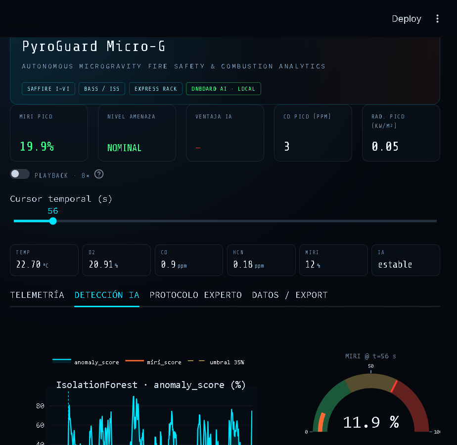

Detección temprana de incendio en microgravedad a partir de la química del aire, no del calor. Local, determinista y auditable.

Primera alarma · propagación Saffire
30 repeticiones con ruido distinto · atmósfera ISS. En aire enriquecido (34 % O₂) la ventaja es +226 s.
Ciego en 4 de los 6 casos de incendio. Cuando llega a verlo, llega 325 s tarde.
| Clase | IA | Clásico |
|---|---|---|
| Pirólisis de Kapton | 30/30 | 0/30 |
| Propagación (Saffire) | 30/30 | 30/30 |
| Llama fría oxidativa | 30/30 | 0/30 |
| Sin fuego (incl. corte de ventilación) | 0/90 | 0/90 |
Atmósfera ISS · 30 corridas por fila
python validation.py · 270 corridas04 / 07
Python 3.12 · Streamlit · pandas · NumPy · scikit-learn · Plotly
Cliente TLCP propio para Lightstreamer, sin dependencias.
pyroguardmicrog.streamlit.app · github.com/gaelopr/pyroguard-micro-g